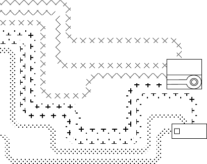
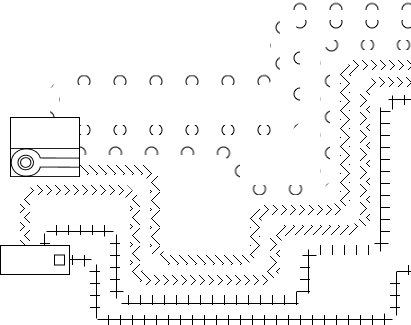
Un progetto che esplora l'identità digitale e l'uso del web.
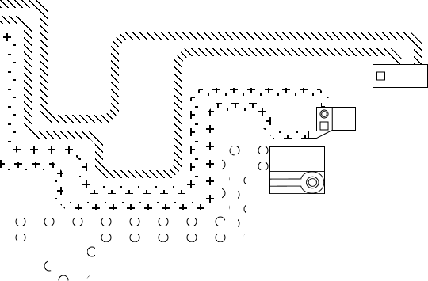
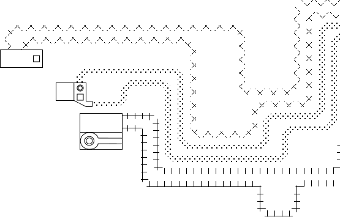
Il progetto mira a visualizzare e rendere comprensibili i ruoli, le piattaforme e le dinamiche che influenzano la nostra presenza online, favorendo un confronto diretto tra identità reale e identità digitale.
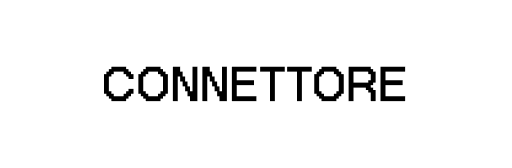
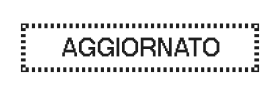
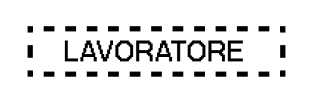
Archetipi
Attraverso la costruzione di archetipi rappresentativi degli utenti di Internet, la tesi indaga le molteplici identità che ciascun individuo assume nel contesto digitale.
Clicca un archetipo per scoprirlo.
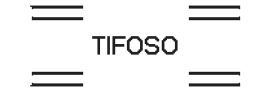
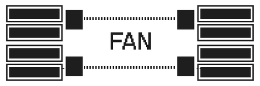
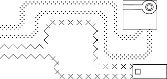
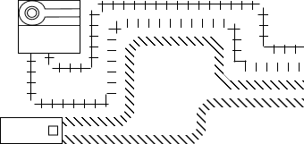
Il progetto
La ricerca si propone di visualizzare e rendere più comprensibili i ruoli, le piattaforme e le dinamiche che modellano la nostra presenza sul web, stimolando un confronto tra identità reale e identità digitale.
La mappa si configura così come un dispositivo critico che aiuta a orientarsi e a riflettere su come i nostri comportamenti siano sempre più influenzati dai dati e su come, oggi, la nostra identità sia sempre più definita da ciò che consumiamo e produciamo online.
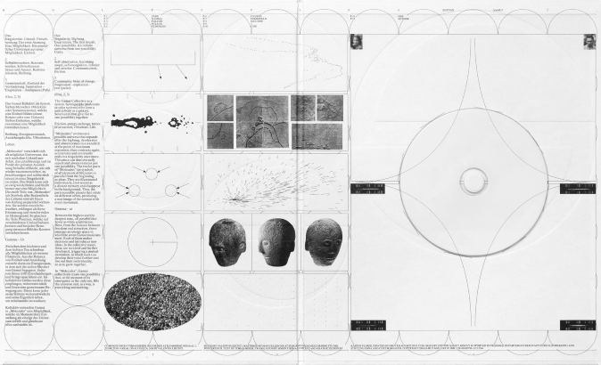
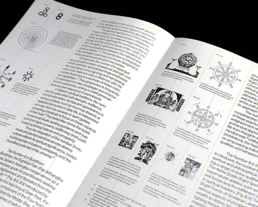
In media ci vogliono 7 minuti.
Take testVuoi scoprire come appare la tua entità digitale? Raccontaci di te in questo test e la creeremo per te.